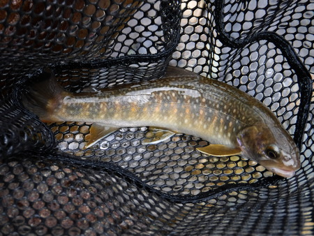
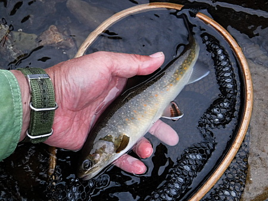
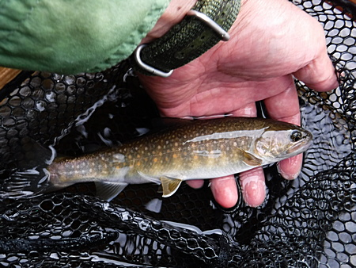
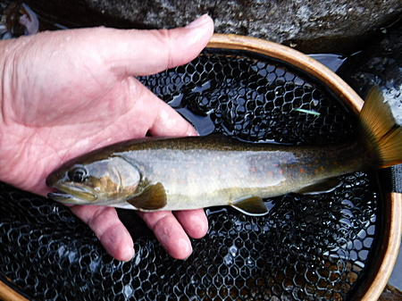
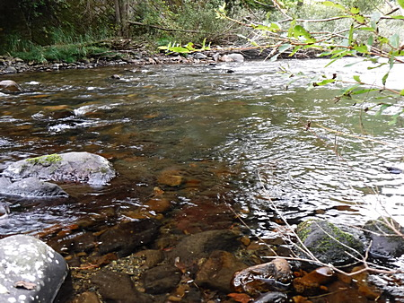
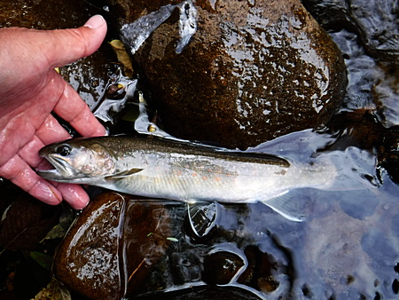
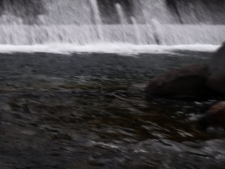
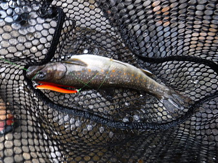

釣行日誌 故郷編
2019/09/28 単独で長駆、いつもの川へ
今日も叔父に抜け駆けして、単独で長駆、いつもの川へ。高速は順調に流れていた。
コンビニでおにぎりと入漁券を買う。釣り場に近づくと、森の中の道は、それらしき車がいっぱい停まっている。
この激戦区ではあるが、なるべく人気のなさそうな、農道の橋詰にレンタカーを停め、ゆっくりお弁当をいただく。おもむろに釣り支度をして、小道を降りて入渓。
さっそく橋の上手から１尾出て、慎重にキャッチ。幸先が良い。

橋の下で２尾目をキャッチ。なかなか調子が良い。産卵期を前に、みな喰い気が立っているのか？

先週バラしたポイントでは、ヒットしたもののまたも外れてしまう。どうもフッキングの動作が弱いようである。
もう１尾追加して、満足したので川を変える。峠を越え、下流の橋から入る。草刈りをしていたおばあちゃんに挨拶をして入渓。
やや増水気味、いい雰囲気である。
小型の魚影が頻繁にミノーの後を追うのが見える。もう一度流してヒット。

橋に近い、良いポイントで良型がヒット。しかし、取り込みに焦って転倒してしまい、下半身ずぶ濡れとなる。冷たい冷たい！
なんとか立ち上がり、体勢を立て直してランディングして写真を撮す。

寒いしウェーダーに浸水したので、いったん車まで着替えに戻る。常に着替えは準備しておかなくては！
15分後に釣り再開。薄暗い浅場で良い引き。まずまずの型が出た。


ここは初めて釣る区間だが、良いポイントが多かった。
魚止めとなっている高い堰堤へ移動。派手なオレンジ色の、重い小型スプーンを思い切り沈めて１尾。


通称「爆釣の淵」へ移動し、そこから釣り下る。秋の早い夕闇が迫る中、ヘッドランプを装着して攻める。しかし、出なかった。
暗闇に包まれたので、今日はこれまでとして、排水溝から道路に這い上がる。
帰途、カレー屋さんで今日は普通の辛さを注文し、美味しくいただく。途中で仮眠して、無事帰宅。午前様であった。
釣行日誌 故郷編 目次へ
サイトマップ
ホームへ
お問い合わせ